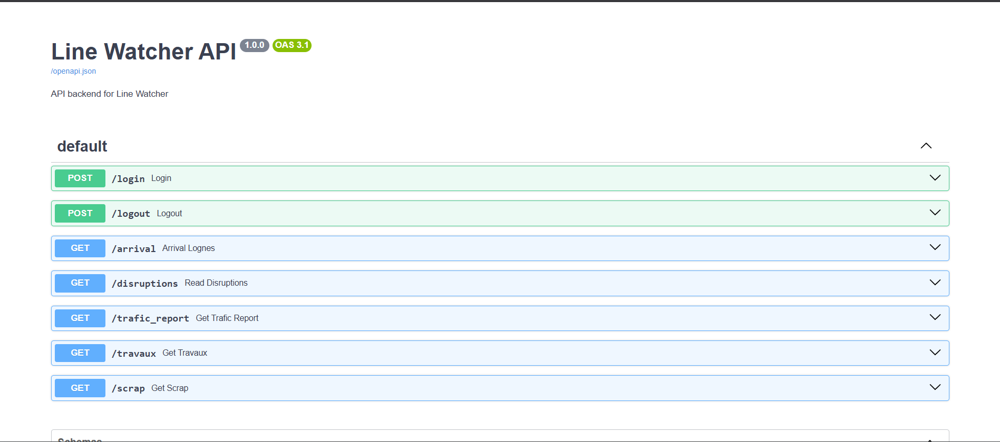

Line Watcher — Backend Python
E5 — Réalisation 1Contexte
Line Watcher est une application développée chez Upper Link permettant aux collaborateurs de consulter les prochains passages du RER A. Le backend Python constitue le cœur du système : il interroge l'API IDFM (Île-de-France Mobilités) en temps réel et expose les données via une API REST consommée par le frontend Angular.
Fonctionnalités
- Appels à l'API IDFM pour récupérer les horaires en temps réel
- Traitement et formatage des données JSON
- Exposition d'une API REST pour le frontend
- Gestion des erreurs et des cas limites
- Cache des données pour limiter les appels API
Technologies utilisées
Python 3
FastAPI
API IDFM
JSON
HTTP
Uvicorn
Architecture
- API REST exposée avec FastAPI
- Module de récupération des données RATP/IDFM
- Module de traitement et parsing des réponses
- Gestion des routes et endpoints
- Déploiement avec Uvicorn
Endpoints principaux
- GET /horaires — Prochains passages RER A
- GET /station/{id} — Horaires par station
- GET /status — État du service
Compétences acquises
- Développement d'API REST en Python
- Consommation d'API tierces (IDFM)
- Gestion des données JSON
- Notions de cache et performance
- Documentation d'une API
Documentation API — Swagger UI
